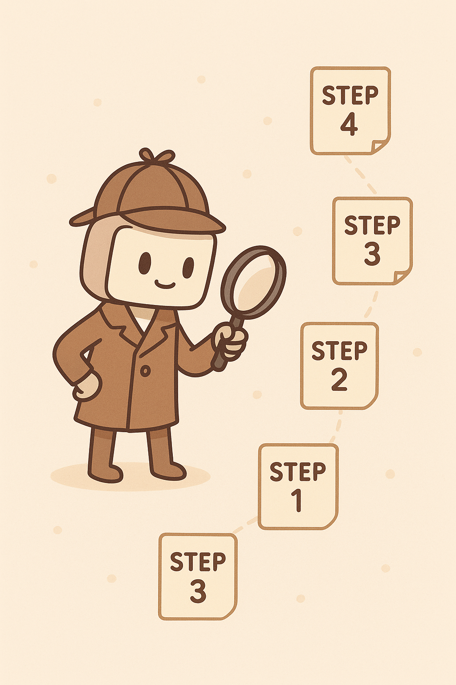
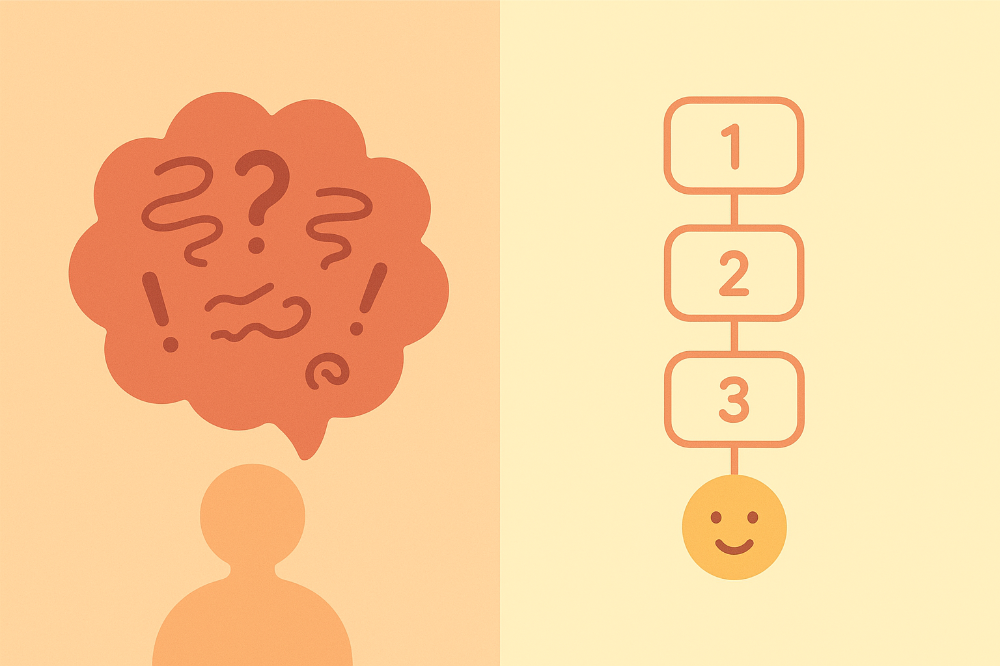

8 Lass die KI erst denken: Chain-of-Thought für Einsteiger
Stell dir vor, du sitzt mit einer Freundin zusammen und erklärst ihr etwas. Du sprichst nicht einfach sofort das Endergebnis aus – du erzählst erst, wie du darauf gekommen bist. Du denkst laut:
„Also, zuerst schaue ich mir dies an… dann überlege ich jenes… und deshalb komme ich zu dieser Antwort.“
Genau dieses Prinzip steckt hinter einem der mächtigsten Werkzeuge im modernen Prompt Engineering:
👉 Chain-of-Thought (CoT) — die Aufforderung an KI, ihre Gedanken **Schritt für Schritt sichtbar** zu machen.Aber bevor wir tief einsteigen, beginnen wir mit einer einfachen, kindgerechten Metapher, die dir das Prinzip spielend leicht erklärt.
8.1 Die Metapher: „Bitte laut denken!“
Wenn du einem kleinen Kind eine Aufgabe gibst, etwa:
„Wie viele Bonbons hat Lisa jetzt? Sie hatte 6, gibt 2 ab, findet dann 3 neue.“ …dann ist das Ergebnis manchmal weniger wichtig als der Prozess. Vielleicht sagt das Kind:
„Also… sie hatte 6… gibt 2 ab… also 4… findet dann 3… also 7!“
Diese sichtbare Denkspur macht es uns leicht zu erkennen, ob das Kind richtig denkt – und selbst wenn es sich irrt, verstehen wir, wo es passiert ist.
KI-Modelle funktionieren überraschend ähnlich. Wenn du sagst:
👉 „Erkläre deinen Denkweg.“
oder
👉 „Denke Schritt für Schritt.“
…dann beginnt die KI, ihren Lösungsweg zu entfalten – wie eine Perlenkette aus Mini-Schritten. Das ist Chain-of-Thought.
Und genau das macht ihre Antworten fast immer klarer, logischer, verlässlicher.

8.2 Warum KI besser wird, wenn sie ihre Schritte zeigt
Viele stellen sich KI als ein Supergenie vor, das einfach „weiß“, was richtig ist. Aber in Wahrheit arbeitet eine KI wie ein extrem schneller Wahrscheinlichkeits-Denker. Sie entscheidet bei jedem Wort, was wahrscheinlich als nächstes kommt.
Das Problem:
Wenn du direkt nach der Antwort fragst – ohne Denkweg –, rät die KI manchmal den Weg zum Ziel.
Aber wenn du sie explizit anweist, ihren Gedankenprozess aufzuschreiben, passiert etwas Spannendes:
✔ 1. Die KI prüft ihre eigene Logik
Durch das Aufschreiben erkennt sie Fehler, bevor sie sie dir präsentiert.
✔ 2. Sie wird strukturierter
Anstatt vom Ende her zu raten, baut sie sich Schritt für Schritt eine Antwort auf.
✔ 3. Sie erklärt verständlicher
Die Antwort ist nicht nur richtig – sie ist nachvollziehbar.
✔ 4. Sie wird kreativer – aber geordnet
Chain-of-Thought wirkt wie ein sortierter Kreativmodus:
Viele Ideen → aber sauber geordnet.
✔ 5. Du kannst kontrollieren, wie tief die KI denken soll
Zum Beispiel:
- „Denke in drei einfachen Schritten.“
- „Denke ausführlich und logisch.“
- „Denke zuerst, antworte danach.“
👉 Warum ist das wichtig für Einsteiger?
Weil du damit sofort einen riesigen Leistungssprung erzielst, ohne komplizierte Technik. Nur durch eine kleine Satzformulierung!
8.3 Wie man Chain-of-Thought einleitet
Du brauchst keine komplizierten Befehle. Schon ein einziger Satz reicht.
Hier sind die einfachsten Formulierungen, die fast immer funktionieren:
👉 Klassiker
- „Bitte denke Schritt für Schritt.“
- „Erkläre deinen Denkweg.“
- „Zeige deine Überlegungen nacheinander.“
👉 Sanfte Varianten
- „Führe mich durch deinen Denkprozess.“
- „Erkläre, wie du auf das Ergebnis kommst.“
👉 Präzisere Varianten
- „Lege zuerst die Schritte offen, antworte dann.“
- „Zerlege die Aufgabe in kleine Teilüberlegungen.“
👉 Kindgerechte / spielerische Varianten
- „Denk einmal laut nach.“
- „Erzähl mir erst, was du überlegst.“
👉 Warum funktionieren diese Sätze?
Weil KI extrem gut darin ist, Textmuster nachzuahmen. Wenn du sagst „Denk Schritt für Schritt“, erzeugt sie den Stil eines strukturierten Denktextes – genauso, wie du es kennst.
8.4 Mini-Story: „Die vergessene Bio-Präsentation“
Stell dir Amira vor. Eine Schülerin, 14 Jahre alt.
Es ist Sonntagabend. Morgen muss sie eine Präsentation in Biologie halten. Thema: „Wie Pflanzen Energie gewinnen“.
Sie hat noch nichts vorbereitet. Sie setzt sich an ihr Handy, öffnet ChatGPT und schreibt:
„Kannst du mir das Thema erklären?“
Die KI antwortet – aber das Ganze ist zu lang, zu kompliziert, und irgendwie an der Aufgabe vorbei.
Amira versucht es nochmal:
„Kannst du mir das bitte in Stichpunkten erklären?“
Schon besser, aber immer noch nicht perfekt.
Dann erinnert sie sich an das Chain-of-Thought-Prinzip.
Sie schreibt:
„Erkläre Schritt für Schritt, wie Pflanzen Energie gewinnen. Denk laut und starte bei der Frage: Was braucht eine Pflanze überhaupt?“
Die Antwort ist diesmal klarer, strukturierter, logischer. Plötzlich ergibt alles Sinn.
Dann:
„Erstelle aus deinen Schritten eine leicht verständliche Präsentation für die 8. Klasse.“
Boom. Sie hat eine perfekte Grundlage.
Chain-of-Thought hat aus ihrem Sonntagsproblem eine lösbare Aufgabe gemacht.
8.5 Gefahren & Grenzen von Chain-of-Thought
Natürlich hat das alles zwei Seiten. Chain-of-Thought ist extrem mächtig – aber du musst auch seine Grenzen kennen.
⚠ 1. KI kann „übererklären“
Manche CoT-Antworten werden viel zu lang. Lösung: Formuliere es einfach um:
- „Bitte kurz und in drei Schritten denken.“
- „Denke knapp, aber klar.“
⚠ 2. KI kann auch bei Fehlern „gut klingende Schritte“ präsentieren
Das nennt man halluzinierte Logik. Wie ein Schüler, der überzeugt falsche Zwischenschritte erklärt.
Lösung:
CoT nie blind vertrauen → immer schnell querchecken.
⚠ 3. CoT ist nicht geeignet für sensible Aufgaben
Zum Beispiel:
- medizinische Diagnosen
- rechtliche Einschätzungen
- sicherheitskritische Entscheidungen
Da gilt: KI darf dir nie die Denkspur einer „Diagnose“ o. Ä. geben.
⚠ 4. KI kann bei CoT jünger wirken – weniger „professionell“
Weil Schritt-für-Schritt-Denken manchmal kindlich wirkt.
Lösung:
- „Denke professionell und präzise Schritt für Schritt.“
- „Denke im Stil eines Experten.“
⚠ 5. CoT ist nicht immer notwendig
Für einfache Aufgaben ist es manchmal komplett überflüssig. Aber für komplexe Aufgaben – Gold wert.
8.6 Mini-Übungen
Hier sind erste Trainingsaufgaben, die dich in Chain-of-Thought warm machen – ohne Mathe, ohne Fachwissen.
👉 Übung 1: Erklär mir etwas – aber bitte in Mini-Schritten
Prompt:
„Erkläre mir Schritt für Schritt, warum der Himmel blau erscheint.“
Achte darauf, wie logisch die Struktur plötzlich wirkt.
👉 Übung 2: Erstelle eine Argumentation mit Denkweg
Prompt:
„Entwickle eine Pro- und Contra-Liste zum Thema: Sollten Schulen mehr Projektarbeit einführen? Denke zuerst laut, strukturiere dann die Antwort.“
Beobachte, wie die KI vom Denken zum Strukturieren übergeht.
👉 Übung 3: Kreativität mit Schrittfolgen aktivieren
Prompt:
„Denk laut und entwickle eine Idee für einen kurzen Instagram-Post über Nachhaltigkeit. Fasse danach die beste Idee zusammen.“
Achte auf die Struktur: Gedanken → Bewertung → Ergebnis.
👉 Übung 4: Planung
Prompt:
„Denk Schritt für Schritt und entwirf einen einfachen Lernplan für die nächsten 7 Tage, um meine Englisch-Vokabeln zu verbessern.“
Du wirst sehen: Die KI wirkt selbst bei Chaos-Aufgaben sortiert.
8.7 Eine zweite Metapher: „Der Detektiv, der Notizen macht“
Stell dir vor, KI ist ein Detektiv. Wenn du nur nach dem Ergebnis fragst, sagt er:
„Der Täter ist XY.“
Aber du weißt nicht, warum.
Wenn du jedoch sagst:
„Zeig mir deinen Gedankengang.“
…dann legt der Detektiv alles offen:
- „Ich habe diese Spur gesehen…“
- „Das war auffällig…“
- „Diese Hinweise passen zusammen…“
Und plötzlich kannst du seine Antwort beurteilen.
Chain-of-Thought macht die KI „überprüfbar“ – und das ist einer der wichtigsten Vorteile überhaupt.

8.8 Die verborgene Superkraft: CoT als Lernwerkzeug
Viele glauben, CoT sei nur ein technisches Prompting-Tool. In Wirklichkeit ist es ein Lernwerkzeug.
Denn:
👉 Wenn KI logisch denkt, lernst du mit.
👉 Wenn KI Schritte erklärt, verstehst du Themen tiefer.
👉 Wenn KI sichtbar nachdenkt, lernst du selbst zu strukturieren.
Man kann fast sagen:
👉 CoT ist ein intelligenter Tutor, der beim Lernen mitdenkt.
Und das ist einer der Gründe, warum es so gut für Schüler, Studenten und junge Erwachsene funktioniert.
Im nachfolgenden Teil dieses Kapitels gehen wir noch tiefer:
👉 Wie du CoT fehlerfrei anwendest
👉 Die 4 Typen von Denkpfaden
👉 Was du niemals tun solltest
👉 Praxisbeispiele für Schule, Social Media, Texte, Planung, Coding
👉 Übungen, mit denen du CoT richtig meisterst
Du wirst sehen:
Wenn du Chain-of-Thought verstanden hast, öffnest du eine Art „Supermodus“ der KI.
Und genau den behandeln wir jetzt.
8.9 Warum CoT dich zu einem besseren „KI-Trainer“ macht
Stell dir vor, du würdest jemandem erklären, wie man ein Puzzle löst. Du würdest nicht einfach sagen:
„Das Puzzle ist fertig.“
Du würdest eher sagen:
„Ich suche zuerst die Randstücke. Dann sortiere ich die Farben. Danach bilde ich kleine Gruppen, bis das Bild entsteht.“
So funktioniert CoT:
Du bringst die KI dazu, nicht nur das Ergebnis zu liefern, sondern den Weg dorthin sichtbar zu machen.
Das hat drei große Vorteile:
👉 ① Du erkennst Fehler sofort
Wenn die KI in Schritt 3 Unsinn macht, musst du nicht raten, warum die Antwort falsch ist — du siehst genau, woran es lag.
👉 ② Die Antwort wird stabiler
Mit CoT bekommt die KI eine klare innere Struktur. Das verhindert Sprünge, Auslassungen oder überflüssige Details.
👉 ③ Du kannst den Denkprozess steuern
Du kannst sagen:
- „Erkläre in 3 Schritten“
- „Fasse die Zwischenschritte kurz“
- „Sei besonders vorsichtig bei Schritt 2“
CoT gibt dir die Möglichkeit, der KI nicht nur zu sagen, was sie tun soll — sondern wie sie es tun soll.
8.11 Wie CoT dir hilft, Fehler der KI zu erkennen (und zu korrigieren)
Ein großer Vorteil von CoT ist, dass du den KI-Prozess wie eine offene Motorhaube betrachten kannst.
Ohne CoT:
- Manchmal stimmt die Antwort nicht.
- Du weißt nicht, warum.
- Du weißt nicht, wo der Fehler war.
- Es ist schwer, eine bessere Version zu erzwingen.
Mit CoT:
Du siehst die Denkfehler Schritt für Schritt — und kannst die KI zwingen, genau dort nachzubessern.
👉 Typische Fehler, die du mit CoT sichtbar machen kannst
① Falsche Annahmen
Beispiel:
Die KI nimmt an, dass du ein bestimmtes Vorwissen hast.
② Logikfehler
Sie denkt „A ⇒ B“, aber eigentlich ist es „A ⇒ C“.
③ Ausgelassene Zwischenschritte
Sie springt direkt zum Ergebnis — und dieses wirkt plötzlich wie aus dem Nichts.
④ Falsche Gewichtung
Sie überbetont unwichtige Aspekte und übersieht die wichtigen.
👉 Wie du korrigierst
Du kannst sagen:
- „Bitte überprüfe Schritt 3 noch einmal.“
- „Schritt 2 wirkt unlogisch — verbessere ihn.“
- „Baue zwischen Schritt 1 und 2 eine zusätzliche Begründung ein.“
- „Bitte denke noch einmal laut über die Annahmen nach.“
So wird die KI zum eigenen Editor. Du führst — die KI folgt.

8.12 Die Risiken von Chain-of-Thought — und wie du sie einfach umgehst
So hilfreich CoT ist, es gibt ein paar Dinge, die du wissen solltest. Zum Glück ist nichts davon gefährlich — du musst es einfach nur beachten.
👉 Risiko 1: CoT kann zu lang werden
Manchmal schreibt die KI 20 oder 30 Schritte, obwohl du nur drei brauchst.
Lösung:
„Bitte fasse dich kurz, maximal 3 Schritte.“
👉 Risiko 2: CoT kann zu kreativ werden
Wenn du nur eine sachliche Antwort willst, kann „laut denken“ manchmal zu viel Fantasie bringen.
Lösung:
„Bitte denke strukturiert und verwende nur nachvollziehbare Schritte.“
👉 Risiko 3: CoT kann falsche Annahmen verstärken
Weil die KI Denkprozesse erfindet, kann ein falscher Startpunkt eine falsche Kettenreaktion auslösen.
Lösung:
„Bitte überprüfe zuerst die Annahmen, bevor du die Schritte ausführst.“
👉 Risiko 4: CoT ist nicht immer nötig
Für ganz simple Fragen ist CoT Overkill.
Beispiel:
„Was ist die Hauptstadt von Italien?“
=> Dafür braucht man keinen Denkprozess.
Regel:
Nutze CoT für komplexe Aufgaben – nicht für Faktenfragen.
8.13 Mini-Übungen für deinen Alltag
Jetzt trainieren wir.
Die folgenden drei Übungen sind perfekt für Schule, Projekte, Social Media, Lernen und Kreativität.
👉 Übung 1: „Erkläre es in Schritten“
Aufgabe:
Nimm ein Thema, das du grob kennst, und lass es dir in 3–5 Schritten erklären.
Prompt:
„Bitte denke laut und erkläre mir in 4 einfachen Schritten, wie man einen Lernzettel erstellt. Zeige zuerst deine Gedanken, dann die fertigen Schritte.“
👉 Übung 2: „Verbessere einen Text – aber nachvollziehbar“
Aufgabe:
Nimm einen kurzen Satz oder Absatz, den du besser haben willst.
Prompt:
„Denke Schritt für Schritt darüber nach, wie man diesen Text klarer formuliert. Zeige zuerst die Überlegungen, dann die finale Version.“
👉 Übung 3: „Kreative Ideen mit Struktur“
Aufgabe:
Generiere Ideen, aber bitte mit Begründung.
Prompt:
„Bitte denke strukturiert darüber nach, welche Kriterien eine gute Idee für ein Schulprojekt erfüllen sollte. Gib danach 3 Ideen aus, die genau zu diesen Kriterien passen.“
8.14 Warum CoT dich unabhängiger und schneller macht
Wenn du Chain-of-Thought nutzt, passiert etwas Besonderes:
👉 Du kannst jeden KI-Fehler sofort sehen.
👉 Du entwickelst ein Gefühl für gute Strukturen.
👉 Du lernst, wie die KI „überlegt“ — und wie du sie steuern kannst.
👉 Du wirst automatisch präziser, klarer und kreativer.Kurz:
CoT baut dein inneres Prompt-Radar auf. Du wirst zu jemandem, der nicht einfach Fragen stellt, sondern Prozesse steuert.
8.15 Ausblick auf Kapitel 9
Im nächsten Kapitel betreten wir eine der spannendsten Zonen der KI-Arbeit: die kreative Seite. Nachdem du gelernt hast, wie KI sauber denkt, logisch strukturiert und nachvollziehbar arbeitet, geht es nun darum, Ideen zu erschaffen, Stile zu formen und Lernen spielerischer zu machen.
Du erfährst,
👉 wie du mit nur wenigen Worten völlig unterschiedliche **Schreibstile** anstößt,
👉 wie du KI für **Brainstorming**, **Lernstrategien** und **Social-Media-Ideen** einsetzt,
👉 und wie du kreative Prozesse so steuerst, dass sie dir in Schule, Studium und Freizeit echte Vorteile bringen.Kapitel 9 zeigt dir, dass Prompt Engineering nicht nur logisch – sondern auch unglaublich kreativ sein kann.